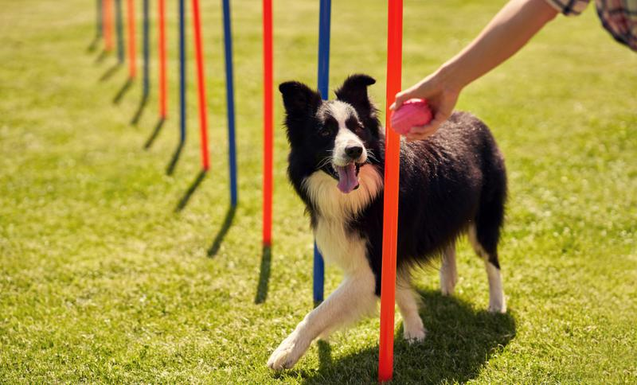
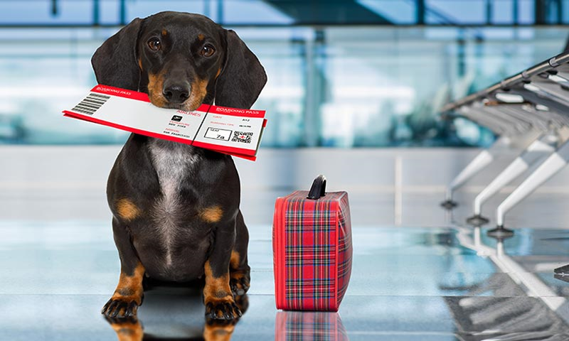

Cuidados y educación para su perro

Para garantizar el bienestar de su perro, es importante:
- Proporcionarle una dieta equilibrada adecuada a su edad y tamaño.
- Realizar ejercicios diarios para mantenerlo saludable y activo.
- Ofrecerle entrenamiento básico para mejorar su comportamiento y socialización.
- Visitar al veterinario regularmente para chequeos y vacunas.
Además, asegúrese de brindarle un ambiente seguro y afectuoso donde pueda desarrollarse plenamente. Una buena rutina de cuidado incluye el cepillado del pelaje y la limpieza de sus orejas y dientes.
Salir de viaje con su mascota

Viajar con su mascota puede ser una experiencia placentera si toma las medidas adecuadas. Algunos consejos clave son:
- Planificar con anticipación el transporte: asegúrese de que el lugar donde se hospede sea pet-friendly.
- Llevar los elementos esenciales, como comida, agua, juguetes y un kit de primeros auxilios para mascotas.
- Hacer paradas regulares durante el viaje para que su mascota pueda caminar y hacer sus necesidades.
- Evitar dejar a su mascota sola en el coche, especialmente en días calurosos.
También es importante que su mascota cuente con un collar con placa de identificación y, si es posible, un microchip actualizado con su información de contacto.